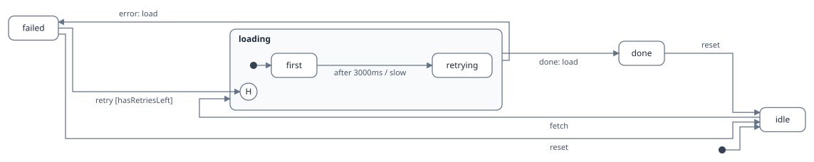

States are real enums
Labels, icons and @is() predicates live on the state. Nested states are
their own enums, so each level stays exhaustive.
Statecharts for Ember
States are real-enums values, events are
decorated methods, context is @tracked fields. Everything xstate does, on
the same semantics: hierarchy, parallel regions, history, guards, timers, invoked and
spawned actors. Templates track it, tests wait for it, and the diagram is drawn from the
code.
npm i @switchyard-ts/core @switchyard-ts/ember @real-enums/core
Why

npx switchyard diagram fetch.ts. In
your app, <SwitchyardDebug> draws it live.
class FetchState extends State {
static Idle = FetchState.of('idle')
static Loading = FetchState.of('loading', { children: Attempt, history: 'shallow' })
static Done = FetchState.of('done')
static Failed = FetchState.of('failed')
}
class Fetch extends Machine<FetchState> {
@tracked user?: string
@tracked retries = 0
get hasRetriesLeft() {
return this.retries < 3
}
@transition({ from: FetchState.Idle, to: FetchState.Loading })
fetch() {}
@transition({ from: FetchState.Failed, to: history(FetchState.Loading), guard: 'hasRetriesLeft' })
retry() {
this.retries++
}
@invoke(FetchState.Loading, { onDone: FetchState.Done, onError: FetchState.Failed })
async load(signal: AbortSignal) {
this.user = await api.get(signal)
}
@after(3000, { from: Attempt.First, to: Attempt.Retrying })
slow() {}
}
Labels, icons and @is() predicates live on the state. Nested states are
their own enums, so each level stays exhaustive.
fetch.retry() sends the event, typed by its signature. Guards are getters
over your tracked fields. can knows what is allowed now.
Run-to-completion on the SCXML algorithm, checked against xstate itself. Export to xstate JSON or SCXML, import from them, or generate a class from an xstate config.
Ember
import { machine, send, can } from '@switchyard-ts/ember'
export default class UserCard extends Component {
fetch = machine(this, new Fetch()) // stops when the component is destroyed
<template>
{{#if this.fetch.state.isLoading}}Loading…{{/if}}
<button disabled={{if (can this.fetch "retry") false true}}
{{on "click" (send this.fetch "retry")}}>Retry</button>
</template>
}
Templates re-render on transitions. Services hold app-wide machines.
await settled() waits for invokes and timers.
<SwitchyardAnnouncer> tells screen readers what changed. Snapshots
restore across reloads, and bindField puts a state in a record or the URL.
In Ember →
Diagrams
Mermaid for READMEs and pull requests, DOT, SVG laid out by ELK, a class-interface view with payload types, the live actor tree, and a live in-app view that lights up the active states. From the command line, at build time with the Vite plugin, or in your app. Diagrams →
Testing
A manual clock for timers, toBeIn and assert.machineIn, a
coverage report of states and transitions no test reached, and model-based tests that walk
every path and drive the real UI through
harnessed.
Testing →
Packages
| Package | For |
|---|---|
@switchyard-ts/core |
Machines, decorators, the interpreter, snapshots |
@switchyard-ts/ember |
Tracking, lifetimes, helpers, waiters, <SwitchyardAnnouncer>,
<SwitchyardDebug>
|
@switchyard-ts/graph |
Mermaid, DOT, SVG, interface and actor views, the live viewer |
@switchyard-ts/test |
Paths, coverage, matchers, a manual clock |
@switchyard-ts/harnessed |
Model-based tests through harnessed |
@switchyard-ts/interop |
xstate JSON and SCXML, both ways, and codegen |
@switchyard-ts/inspector |
The Stately Inspector |
@switchyard-ts/cli |
switchyard diagram|export|import, and a Vite plugin |
@switchyard-ts/eslint-plugin |
Unreachable states, unknown guards, non-exhaustive switches |
@switchyard-ts/skills |
The authoring skill for coding agents |